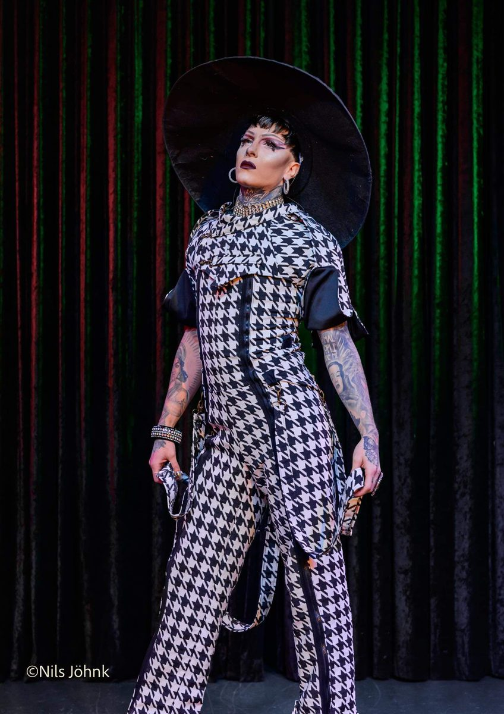
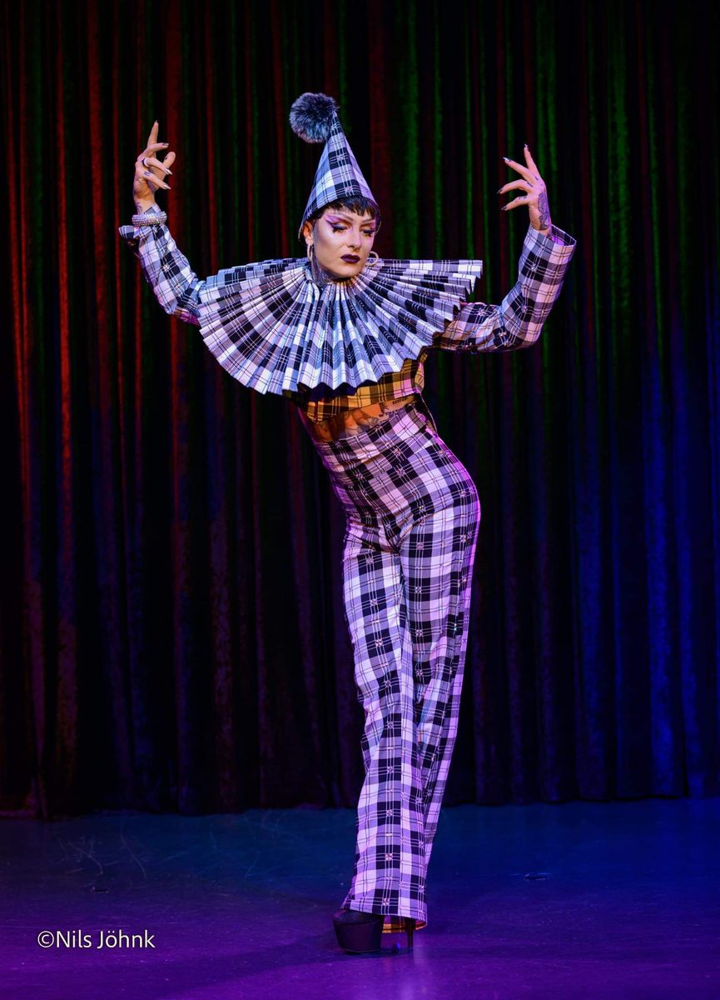
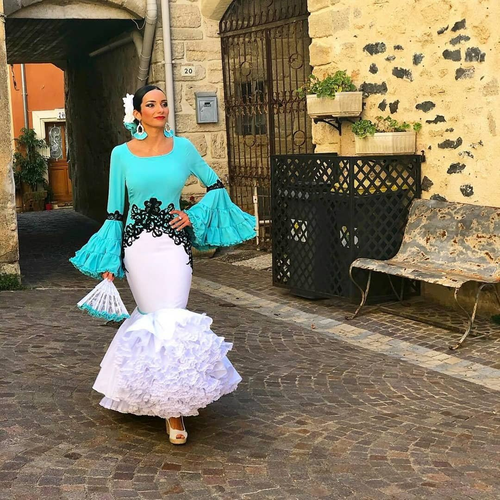
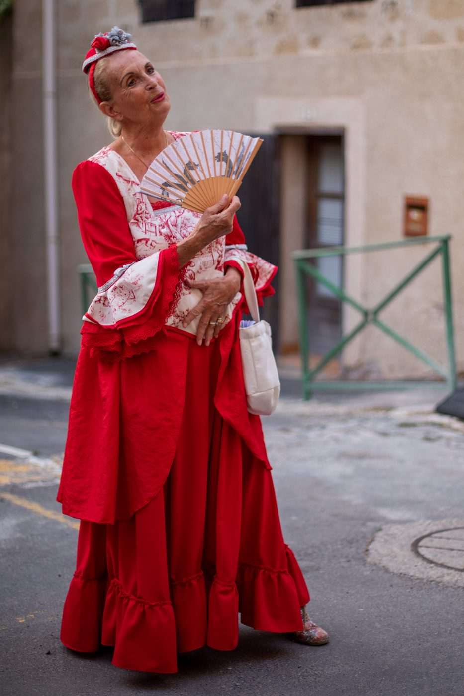
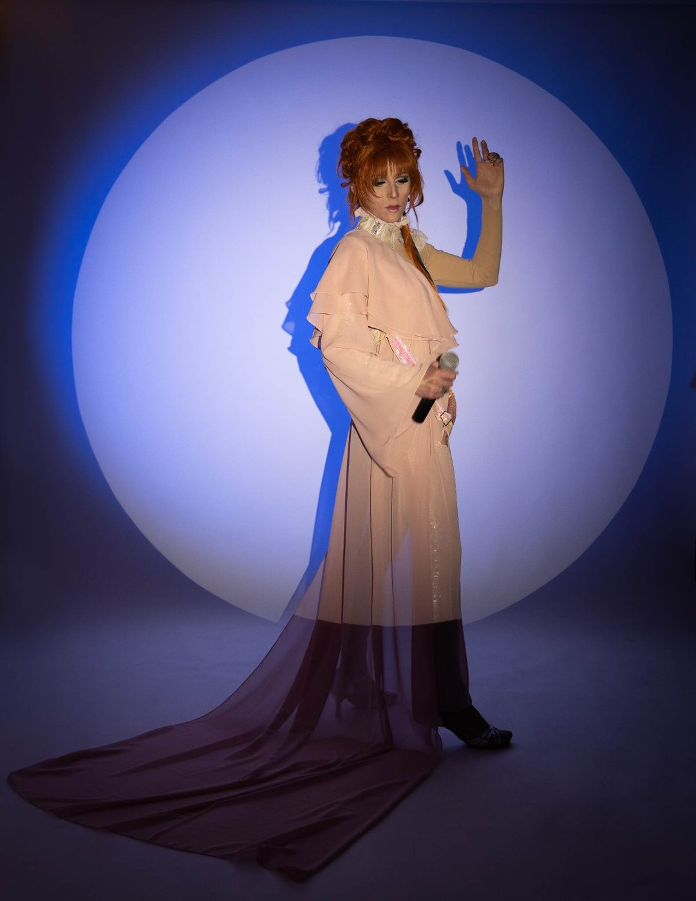
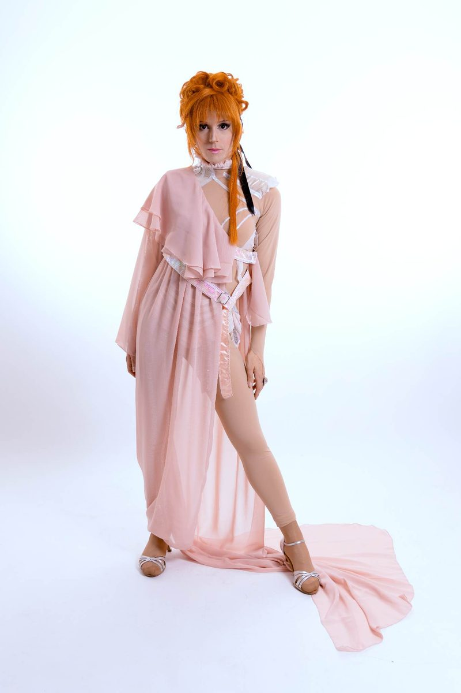
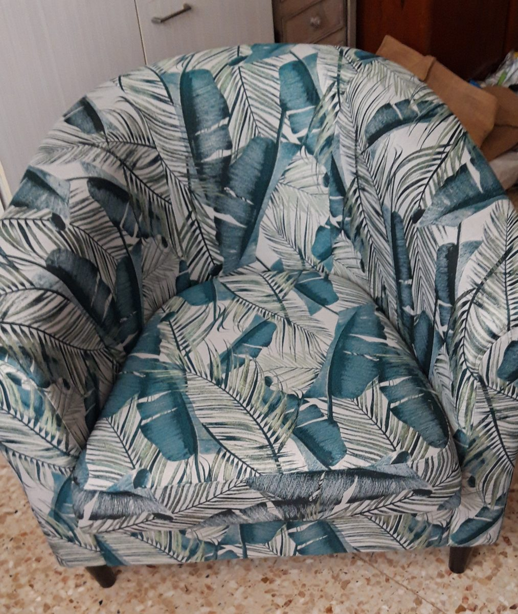
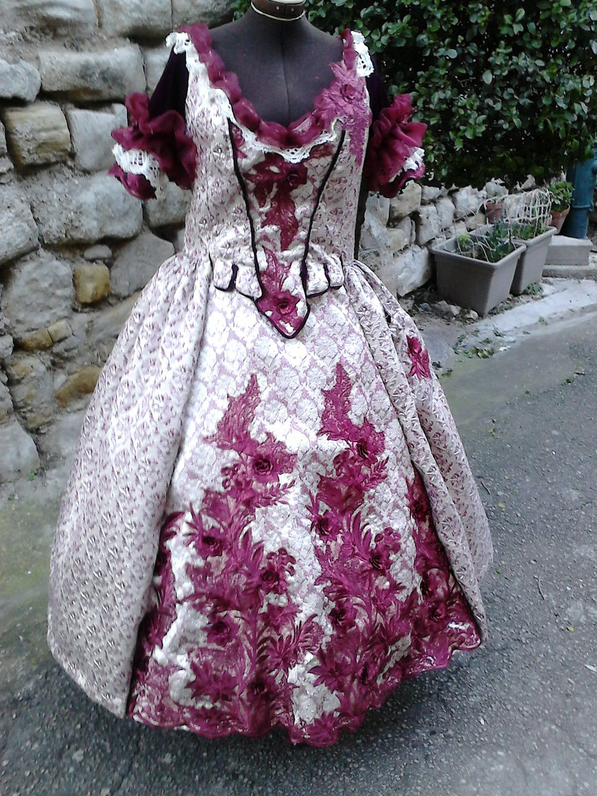

Costumes de scène
Théâtre, cabaret, danse, carnaval : à la mesure de l’artiste.
COUTURIÈRE & COSTUMIÈRE
Vêtements uniques, costumes de scène.
Vos idées prennent vie, un point après l’autre.
Delphine Roger · Castelnau-de-Guers
Hérault · près de Pézenas.

01 / CRÉATIONS
De l’esquisse
au détail.

Costume de spectacle

Création sur mesure

Costume d’inspiration historique

Costume de scène

Pièce sur mesure

Confection d’intérieur
Photographies : Nils Jöhnk · F. Beddok · Hand Photography.
02 / SAVOIR-FAIRE
Théâtre, cabaret, danse, carnaval : à la mesure de l’artiste.
Robes de mariée, cérémonie, quotidien. Votre silhouette, votre style.
Ajuster, réparer, réinventer les vêtements que vous aimez.
Rideaux, coussins, habillages de fauteuils : votre intérieur, sur mesure.

03 / L’ARTISTE
Delphine Roger, couturière diplômée et costumière-créatrice certifiée. À Castelnau-de-Guers, précision du geste et liberté de créer.
VOTRE PIÈCE, ENSEMBLE
EN PRATIQUE
Par téléphone ou email : votre idée, vos inspirations, votre date. Nous préparons ensuite un devis.
Oui : ourlets, ajustements et transformations font aussi partie de la vie de l’atelier.
Rencontrons-nous à Castelnau-de-Guers. Appelez pour convenir d’un rendez-vous et des délais de votre pièce.
À VOTRE TOUR
Une envie, une idée ?
Parlons-en.
Ouvre votre messagerie.
Sur rendez-vous.